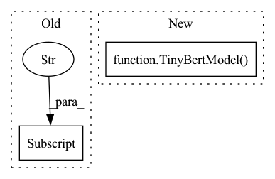

Pattern ID :20011

Before Change
self.tinybert = tinybert
self.num_classes = num_classes
self.dropout = nn.Dropout(dropout if dropout is not None else self.tinybert.config["hidden_dropout_prob"])
self.classifier = nn.Linear(self.tinybert.config["hidden_size"], num_classes)
self.activation = nn.ReLU()
self.apply(self.init_weights)
After Change
def __init__(self, config: TinyBertConfig):
super(TinyBertForSequenceClassification, self).__init__(config)
self.tinybert = TinyBertModel(config)
self.num_labels = config.num_labels
self.dropout = nn.Dropout(
config.classifier_dropout if config.classifier_dropout is not None else config.hidden_dropout_prob
)
In pattern: SUPERPATTERN
Frequency: 3
Non-data size: 2
Instances
Fragment ID: 65195602
Project Name: paddlepaddle/paddlenlp
Commit Name: 8d63af54fdac61a222f6738d2af3402328e76d96
Time: 2023-03-28
Author: 709153940@qq.com
File Name: paddlenlp/transformers/tinybert/modeling.py
M Class Name: TinyBertForSequenceClassification
N Class Name: TinyBertForSequenceClassification
M Method Name: __init__(2)
N Method Name: __init__(4)
M Parent Class: TinyBertPretrainedModel
N Parent Class: TinyBertPretrainedModel
M File Name: paddlenlp/transformers/tinybert/modeling.py
N File Name: paddlenlp/transformers/tinybert/modeling.py
M Start Line: 561
M End Line: 566
N Start Line: 396
N End Line: 403
'>
Before Change
super(TinyBertForMultipleChoice, self).__init__()
self.num_choices = num_choices
self.tinybert = tinybert
self.dropout = nn.Dropout(dropout if dropout is not None else self.tinybert.config["hidden_dropout_prob"])
self.classifier = nn.Linear(self.tinybert.config["hidden_size"], 1)
self.apply(self.init_weights)
After Change
def __init__(self, config: TinyBertConfig):
super(TinyBertForMultipleChoice, self).__init__(config)
self.num_choices = config.num_choices
self.tinybert = TinyBertModel(config)
self.dropout = nn.Dropout(
config.classifier_dropout if config.classifier_dropout is not None else config.hidden_dropout_prob
)
self.classifier = nn.Linear(config.hidden_size, 1)
'>
Fragment ID: 65195603
Project Name: paddlepaddle/paddlenlp
Commit Name: 8d63af54fdac61a222f6738d2af3402328e76d96
Time: 2023-03-28
Author: 709153940@qq.com
File Name: paddlenlp/transformers/tinybert/modeling.py
M Class Name: TinyBertForMultipleChoice
N Class Name: TinyBertForMultipleChoice
M Method Name: __init__(2)
N Method Name: __init__(4)
M Parent Class: TinyBertPretrainedModel
N Parent Class: TinyBertPretrainedModel
M File Name: paddlenlp/transformers/tinybert/modeling.py
N File Name: paddlenlp/transformers/tinybert/modeling.py
M Start Line: 813
M End Line: 818
N Start Line: 646
N End Line: 653
'>
Before Change
def __init__(self, tinybert):
super(TinyBertForQuestionAnswering, self).__init__()
self.tinybert = tinybert // allow tinybert to be config
self.classifier = nn.Linear(self.tinybert.config["hidden_size"], 2)
self.apply(self.init_weights)
def forward(
After Change
def __init__(self, config: TinyBertConfig):
super(TinyBertForQuestionAnswering, self).__init__(config)
self.tinybert = TinyBertModel(config)
self.classifier = nn.Linear(config.hidden_size, 2)
self.apply(self.init_weights)
def forward(
'>
Fragment ID: 65195599
Project Name: paddlepaddle/paddlenlp
Commit Name: 8d63af54fdac61a222f6738d2af3402328e76d96
Time: 2023-03-28
Author: 709153940@qq.com
File Name: paddlenlp/transformers/tinybert/modeling.py
M Class Name: TinyBertForQuestionAnswering
N Class Name: TinyBertForQuestionAnswering
M Method Name: __init__(2)
N Method Name: __init__(2)
M Parent Class: TinyBertPretrainedModel
N Parent Class: TinyBertPretrainedModel
M File Name: paddlenlp/transformers/tinybert/modeling.py
N File Name: paddlenlp/transformers/tinybert/modeling.py
M Start Line: 679
M End Line: 682
N Start Line: 517
N End Line: 520